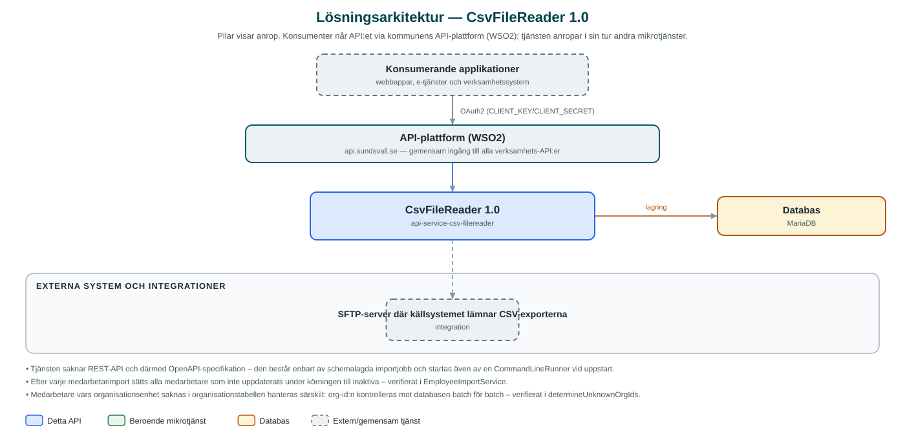

CsvFileReader
Schemalagd tjänst som hämtar CSV-filer med organisations- och medarbetardata via SFTP och läser in dem i en databas som andra tjänster kan använda.
Om API:et
CsvFileReader är en bakgrundstjänst som håller en databas med kommunens organisationsträd och medarbetare uppdaterad. Källsystemet exporterar två CSV-filer – en med organisationsenheter och en med medarbetare – som tjänsten hämtar från en SFTP-server, läser in och skriver till MariaDB.
Importen körs varje timme och dessutom direkt vid uppstart. Raderna läses in i konfigurerbara batchar och skrivs med upsert-logik: befintliga poster uppdateras, nya läggs till. Medarbetare som inte längre finns med i filen markeras som inaktiva i stället för att raderas, så att historiken bevaras. Bearbetade filer flyttas till en processed-katalog och tidigare bearbetade filer rensas.
Tjänsten exponerar inget eget REST-API – dess uppgift är att fylla databasen, som i sin tur används av andra tjänster som behöver aktuell organisations- och medarbetarinformation.
Det här gör API:et
- SFTP-hämtning – Hämtar organisations- och medarbetarfiler från en SFTP-server till en inkommande-katalog.
- CSV-inläsning – Läser semikolonseparerade CSV-filer i teckenkodningen Windows-1252 med Jacksons CSV-stöd.
- Batchvis upsert – Skriver rader i konfigurerbara batchar till MariaDB; befintliga poster uppdateras och nya läggs till (ON DUPLICATE KEY UPDATE).
- Inaktivering i stället för radering – Medarbetare som inte uppdaterats under en importkörning markeras som inaktiva, så att borttagna anställningar syns utan att data raderas.
- Schemaläggning med lås – Importjobben körs varje timme med ShedLock-lås (dept44-scheduler) så att endast en instans kör åt gången, samt direkt vid uppstart.
API-dokumentation
Ingen incheckad OpenAPI-specifikation hittades i källkodsförrådet; se källkoden för aktuell API-dokumentation.
Teknisk dokumentation
Nedan beskrivs hur tjänsten är uppbyggd, vilka andra tjänster den anropar och vad som krävs för att driftsätta den. Informationen är härledd ur källkoden och dess konfiguration på GitHub.
Arkitektur

API:et är en mikrotjänst (Java 25, Spring Boot via kommunens gemensamma tjänsteplattform dept44 (8.0.3), byggd med Maven). Konsumenter når tjänsten via kommunens gemensamma API-plattform (WSO2) på api.sundsvall.se – tjänsten anropas aldrig direkt. Lagring: MariaDB; tabeller för organisation och medarbetare som fylls av importen (baseline-skript finns i repot, Flyway är avstängt i konfigurationen). Övriga integrationer som förekommer i koden: SFTP-server där källsystemet lämnar CSV-exporterna.
Teknikstack
- Språk: Java 25
- Ramverk: Spring Boot via kommunens gemensamma tjänsteplattform dept44 (8.0.3), byggd med Maven
- Databas: MariaDB; tabeller för organisation och medarbetare som fylls av importen (baseline-skript finns i repot, Flyway är avstängt i konfigurationen)
- Övrigt: Jackson dataformat-csv för CSV-parsning, Apache Commons VFS2 + JSch för SFTP, JdbcTemplate med batchuppdateringar, dept44-scheduler med ShedLock
Beroenden till andra mikrotjänster
Inga anrop till andra mikrotjänster hittades i källkodens konfiguration.
Konfiguration och driftsättning
- SFTP-uppgifter (värd, användarnamn, lösenord) via miljövariabler
- Förväntade filnamn för organisations- respektive medarbetarfilen samt kataloger för inkommande, bearbetade och misslyckade filer
- Batchstorlekar för organisations- och medarbetarimporten
- MariaDB-anslutning via miljövariabler; cron-uttryck och ShedLock-tider för importjobben
Noterbart ur källkoden
- Tjänsten saknar REST-API och därmed OpenAPI-specifikation – den består enbart av schemalagda importjobb och startas även av en CommandLineRunner vid uppstart.
- Efter varje medarbetarimport sätts alla medarbetare som inte uppdaterats under körningen till inaktiva – verifierat i EmployeeImportService.
- Medarbetare vars organisationsenhet saknas i organisationstabellen hanteras särskilt: org-id:n kontrolleras mot databasen batch för batch – verifierat i determineUnknownOrgIds.
- Ett Flyway-baseline-skript finns under db/migration, men Flyway är avstängt i application.yml – databasschemat förutsätts alltså vara etablerat i förväg.
- README:s kloningsanvisning pekar på organisationen Public-Service-as-a-Service, medan koden publiceras under Sundsvallskommun – repot delas mellan organisationerna.
Källkod
Källkoden är öppen och finns hos Sundsvalls kommun på GitHub. I källkodsförrådet finns även instruktioner för att klona, konfigurera och starta tjänsten i egen miljö.